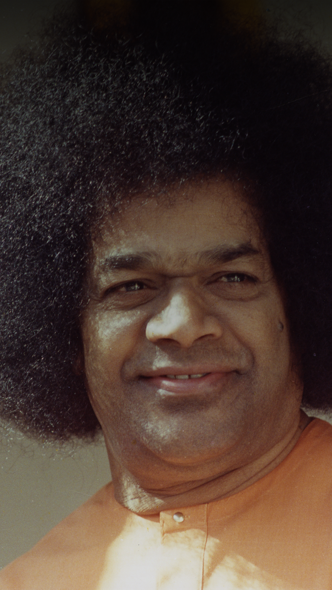

"Love All, Serve All"
- Sathya Sai Baba, Spiritual Teacher and Humanitarian
Welcome to Our Center
The Sri Sathya Sai Baba Center of Concord (SSSBCC) was established in the late 1970s under Swami’s guidance and is one of the oldest centers in the United States. Located in the East Bay Area, California, the center hosts weekly Study Circles, Devotional, Service, Educare (Balvikas), and Young Adult programs. We invite everyone to experience the joy of spiritual learning and selfless service.
Contact us at: ssbc.concord@gmail.com
